| Captain Charles Baker was the first miner to lead a party into the Silverton area in 1860. Baker had been involved in Colorado's first gold rush at Cherry Creek. With the financial backing of his employer, S.B. Kellogg, Baker lead a small party into the area that would later become Silverton. Baker's Park, as the area was known, served as a winter camp for the men while they explored the area that is now Eureka. They found some color in the placer deposits with as much as 25 cents to the pan being an average. Kellogg brought a party of 300 people into area the following year to help with the work. The coming of the Civil War brought the venture to an abrupt halt when all interested parties returned home to their respective sides of the conflict. The discovery of the treasures hidden in the San Juan Mountains would have to wait for the end of the Civil War. |

|
One of the earliest views of Silverton
Circa 1875 (141k) |
| In 1868, the Ute Indians signed a treaty opening the San Luis Valley to settlement. This brought a renewed interest in the San Juan Region's mineral resources. Prospectors made their way back into the Silverton area. The Utes, who still held title to the area, protested the attempts and killed those who would defy them. In 1870, another party made up of some original members of Baker's group, returned to the area of Arastra Gulch. They discovered the first significant find in the area, the Little Giant Mine. The Little Giant Mine produced $4000.00 in its first six weeks of operation. |
|
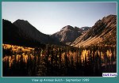 |
Looking up Arastra Gulch
(54k) |
| As word spread of the new strike, more miners flooded the area. The first stamp mill was built at the Little Giant Mine in July of 1873. The new mine produced $12,000.00 through the remainder of 1873. While all of this activity was going on, the Utes reminded the U. S. Government that they still held title to the Silverton area. With the flood of miners and town people entering the area, it was clear the Utes could no longer hold the land. A proposal was made that the Utes sell the land. By September of 1873, a treaty was signed and the land was purchased from the Utes. The area covering present day Hinsdale, Ouray, San Juan, San Miguel, Dolores, Montezuma and La Plata counties was deeded to the U.S. Government. This opened the flood gates and miners and all associated hangers on came to the region to get their piece of the pie. Between one-thousand and fifteen-hundred claims were staked in 1873 alone. |

|
Silverton
Circa 1876 (165k) |
| Many miners who came to the area, settled in Baker's Park. The first sawmill in the area was built. With this source of affordable building materials nearby, construction of the new town began. Silverton got its name from a comment made by a local miner. The miner was heard to say "We do not have much gold but we have silver by the ton." By 1874, a plat for the new town was completed and by the end of the year 25 cabins had been built. One-hundred residents were calling Silverton home. By 1875, more than 100 buildings had been constructed including a school, and post office. The post office opened for business on February 1, 1875. |
| The arrival of spring was always a welcome relief from the isolation brought by the severe winter weather. The La Plata Miner gave the following report in the May 6, 1876 issue: Last Tuesday afternoon our little community was thrown into a state of intense excitement by the arrival of jacks (donkeys), as they came into sight about a mile above town. Somebody gave a shout, "turn out, the jacks are coming," and sure enough there were the patient homely little fellows filing down the trail. Cheer after cheer was given, gladness prevailed all around, and the national flag was run up at the post office. It was a glad sight, after six long weary winter months of imprisonment to see the harbingers of better days, to see these messengers of trade and business, showing that once more the road was open to the outside world. |
| 1876 also saw Colorado become the 38th state. Popular folk lore would have us believe the officials of Howardsville, the first County Seat of San Juan County, gave up the honor under less than honorable circumstances. It is said that after giving the clerk of Howardsville too much to drink, the citizens of Silverton moved the County records to Silverton. The truth is, Silverton won the right in an election. |
| A toll road was constructed to Silverton from Animas City in 1877. The new road opened transportation to and from Silverton. In 1882, the Denver and Rio Grande built its branch line up the Animas River to Silverton. With the arrival of the railroad, shipment of the ore from the mines above Silverton became a paying proposition. This branch line is now the tourist railroad known as The Durango and Silverton Narrow Gauge Railroad. |

|
Silverton
1877 Otto Mears had built his first toll road (113k) |
| While Silverton was getting on its feet, several other towns were forming in the mountains above. Animas Forks, at the head of the Animas River, south of Silverton, had 30 houses and a smelting and refining works. The town of Gladstone, also to the south on Cement Creek, had a chlorination works. Gladstone was connected to Silverton by a wagon road. North of Silverton, John Robinson had discovered the Guston and Yankee Girl mines. The new town of Guston, named for the mine, sprang up in the shadow of the workings. These mines and the others in the Red Mountain District would ship much ore through Silverton then out over the Denver and Rio Grande Railroad. Red Mountain Town and Ironton, at the far North end of the Red Mountain District, were also settled at this time. |

|
Mining supply store next to depot in Silverton
(111k) |
| As Silverton and the surrounding towns grew, transportation became an important issue. Otto Mears, who would later build railroads in Silverton, built several toll roads in the area. Mears built a toll road to connect Silverton with Ouray to the north. This road would one day become the roadbed of Mears' first railroad, The Silverton. He also built a toll road to Animas forks that later served as part of the roadbed for his Silverton Northern Railroad. By 1885, Silverton had a population of fifteen-hundred year-round residents. A smelter, three sampling works and a chlorination works were in operation. Three sawmills were busy cutting wood to supply the carpenters at work. |

|
Silverton
1890 (106k) |
| In 1887, Silverton was ready for a more efficient and economical form of transportation. The mines in the area all had to bring their ore to Silverton, by wagon, for shipment on the Denver and Rio Grande. What Silverton needed was a new railroad to help bring cost of transporting ore to an affordable level. The natural person to spear head the effort was Otto Mears. Mears had built a network of toll railroads that stretched out more than 200 miles by 1887. This earned him the nick name of "The Path Finder of the San Juans." Mears was the logical choice to build the railroads the area required. |
|
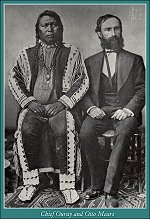 |
Chief Ouray and Otto Mears
(89k) |
| In 1887, Mears built the first railroad that originated in Silverton. The Silverton Railroad was built to serve the mines to the north in the Red Mountain District. These mines were very productive at first, but as time passed, the high level of under ground water became a problem. The Rio Grande Southern and the Silverton Northern Railroads were built with the profits earned in the early years of the Silverton Railroad. With the new railroad in operation, Silverton was to enjoy a profitable period until the summer of 1893. |
|
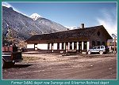 |
Former Denver & Rio Grande Depot
(105k) |
| In 1893, the U.S. Congress repealed the Sherman Silver Purchase Act. This piece of legislation required that the Federal Government mint 16 silver coins to each one made of gold. The Act had kept silver prices at artificially high levels until its repeal. The result of the repeal was disastrous for Silverton and most other silver camps in the Nation. Many mining towns turned into instant ghost towns over night because of the rapid fall in silver prices. Silverton escaped this fate and managed to stay afloat, as did the Silverton Railroad, but it would be two years until the economy of the area would recover. |
| After silver prices stabilized, Silverton saw a general shift in its economy. The mines in the Red Mountain District, which had been so successful in the past, were all struggling with water. As the mines in the north went deeper, they encountered under ground water that could not be removed at an affordable price. Simultaneously, the mines to the south of Silverton were doing very well. These mines did not have the underground water problems but still had one problem to over come. They needed the same economical transportation that the mines to the north enjoyed. |
| In 1895, Mears built Silverton's second railroad, the Silverton Northern. The new railroad extended the short branch line that went to the Silver Lake Mill up to Eureka. Eureka was the home of the very rich Sunnyside Extension mine. The new railroad enjoyed great success. The completion of the large Sunnyside mill in Eureka gave the line plenty of traffic. The Sunnyside was one of the biggest producers in the entire area and was one of the last to close in 1991. In 1904 the Silverton Northern was extended to Animas Forks where the Gold Prince Mine had built a new Mill. The Gold Prince Mill was the largest mill of its kind in the state of Colorado. It provided many cars of ore for the new railroad to transport. |
| By 1898, the Silverton Railroad was still having problems and finally went into receivership in 1899. The mines in the Gladstone area were prospering and in fact petitioned Mears for a branch line up Cement Creek. Mears, who had left Silverton at the time, was not interested in building another railroad. The owners of the mines took it upon themselves to construct Silverton's third railroad, The Silverton Gladstone and Northerly. This line was the second longest lived of the three railroads and spent most of its life as a branch line of the Silverton Northern. The 7.25 mile line was the shortest of the three railroads in Silverton. The traffic from Gladstone helped Silverton succeed at a time when the mines in the Red Mountain District were closed due to water problems. |
|
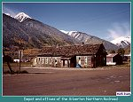 |
Silverton Northern Depot and office
(84k) |
|
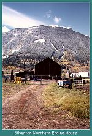 |
Silverton Northern Engine House
(93k) |
|
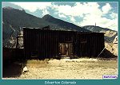 |
Silverton Colorado
(69k) |
| As Silverton entered the new century, the mining business upon which Silverton depended, was in good health overall. The Mines to the south were open and an extension of the Silverton Northern was completed to Animas Forks. A branch line, up Cunningham Creek, was built from Howardsville to serve the mines above town. Mears brought the Silverton Railroad out of receivership and reorganized it as The Silverton Railway. The mines to the north in the Red Mountain District saw the end to their water problems in 1907 with the completion of the Joker Tunnel. |
| The citizens of Silverton built many of the towns most impressive buildings at this time. The Miners Union Hall was an important structure that cost $35,000.00 to construct. A new telephone system was installed to service the town. It also connected the mill at Eureka and Silverton to Durango. A private water system was purchased by the town. Improvements made to the system afforded a more reliable source of water. The new brick jail was built and still stands today as a tourist information booth. |
|
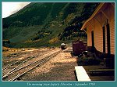 |
The morning train departs Silverton
September 1989 (102k) |
|
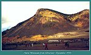 |
Anvil Mountain from Silverton
September 1996 (69k) |
| Silverton also received money to build a very attractive library from the Carnegie Library Construction Program. The program was an endowment, from millionaire Andrew Carnegie, that built libraries in many towns throughout the U.S. in the early part of the century. A new City Hall was constructed at a cost of $40.000.00 and in 1907, San Juan County built a new Court House. The Court House is the home of the Historical Society now, and contains a very fine museum that you will not want to miss when next in Silverton. |
| This prosperity did not last, but mining did not die overnight. During the years 1910-1920, Silverton saw a decline in mining activity, except during WWI. The mines in the area were contributing zinc concentrates to the war effort. zinc was very much in demand for the manufacture of brass shell casings. The 1920's saw the economy in the region take a bit of an upturn but the crash of the stock market and depression of the 1930's put Silverton's mines into a deep slumber. A short period of activity in the years before WWII brought the town to life for a short period. The slumber returned after the war and soon all of Silverton's railroads were abandoned. |
|
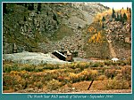 |
The North Star Mill outside of Silverton
September 1996 (126k) |
|
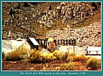 |
The North Star Mill outside of Silverton
September 1996 (126k) |
|
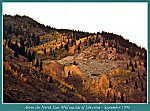 |
Mines above the North Star Mill outside of Silverton
September 1996 (90k) |
| In 1959, mining was revived with the construction of the American Tunnel. The American Tunnel was constructed to tap the rich ore veins that still remained in the old Sunnyside Mine. The American Tunnel was extended east from the Gold King Mine in Gladstone toards Lake Emma and the old workings of the Sunnyside Mine. During construction of the tunnel several excellent ore veins were encountered. The Sunnyside was once agan a paying concern. Mining continued until mother nature stepped in to thwart the efforts of the miners. |
| The melting snowpack left from the winter of 1973-74 caused the tailings pond to break. This breach sent 100,000 tons of tailings, and mud to run down towards Silverton. The tailings washed over the county road, and into the Animas River. The cleanup required over a month to complete during which all mining was suspended. The mine reopened after the cleanup, and had six more years of operation before tragedy struck again. |
| On June 4, 1978, water seaped into an exploritory borehole from Lake Emma high above Eureka. Before the day was over the entire contents of the lake had drained into the American Tunnel. The American Tunnel, and the Sunnyside mine were completly filled with mud. The miners were lucky in the sense that this occurred on a Sunday morning because no one was in the mine. If the leak had occurred during the week, 125 men could have lost their lives. The mud took over two years to remove which put the owners into bankruptcy. In 1985, the mine was sold to Echo Bay Mining, a Canadian gold mining company. After six years of trying, Echo Bay also went broke bringing the end to the largest producing mine in San Juan County. The closure of the mine put several men out of work, and caused the unemployment rate in San Juan County to be the highest in the state. |
| Mining is a very fickle business, subject to the variations of the Worlds' metal markets. From time to time, talk of reopening the mines in Silverton is heard. If the mines ever reopen, the ore will be hauled by large trucks rather than steam trains. The merchants of Silverton now mine a different metal. That metal is the silver found in the pockets of the tourists who visit Silverton, and ride the Durango and Silverton Narrow Gauge Train . The tourist industry is about all that Silverton has to left offer those who have chosen to stay. Of course, the occasional wealthy individual will purchase land, and build a summer home. There are not many jobs for miners or locomotive engineers. |
|
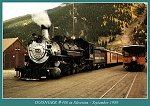 |
D&SNGRR #480 in Silverton
September 1996 (94k) |
|
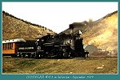 |
D&SNGRR #473 in Silverton
September 1996 (80k) |
| Silverton is a lively place in the summer months, and a must see on any trip to the area. I especially like to spend the day in the high mountains surrounding the town. Silverton is home to some of the best off highway trips in Colorado. Take the time to explore the high lonesome places, and see if you recognize any of the many historic sites that nature has reclaimed. Take along a copy of The Rainbow Route from Sundance Publishing. See if you can find the location of places in the photos in order to do before, and after comparisons of the area. I only hope that the same bunch (the idle rich) who ruined Telluride over the mountain to the west will not find Silverton, and "IMPROVE" it. Well, that is just my little soap box but I had to get that in. |